כריכת הספר

שער פנימי

הקדשה

עמוד 1 — הנבואה
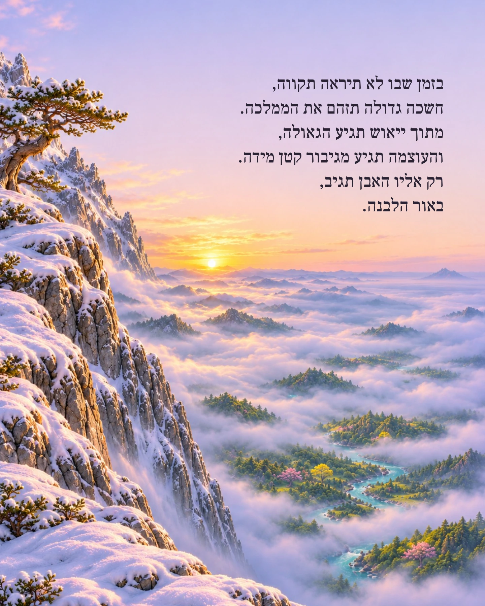
בזמן שבו לא תיראה תקווה,
חשכה גדולה תזהם את הממלכה.
מתוך ייאוש תגיע הגאולה,
והעוצמה תגיע מגיבור קטן מידה.
רק אליו האבן תגיב,
באור הלבנה.
עמוד 2 — מדושי
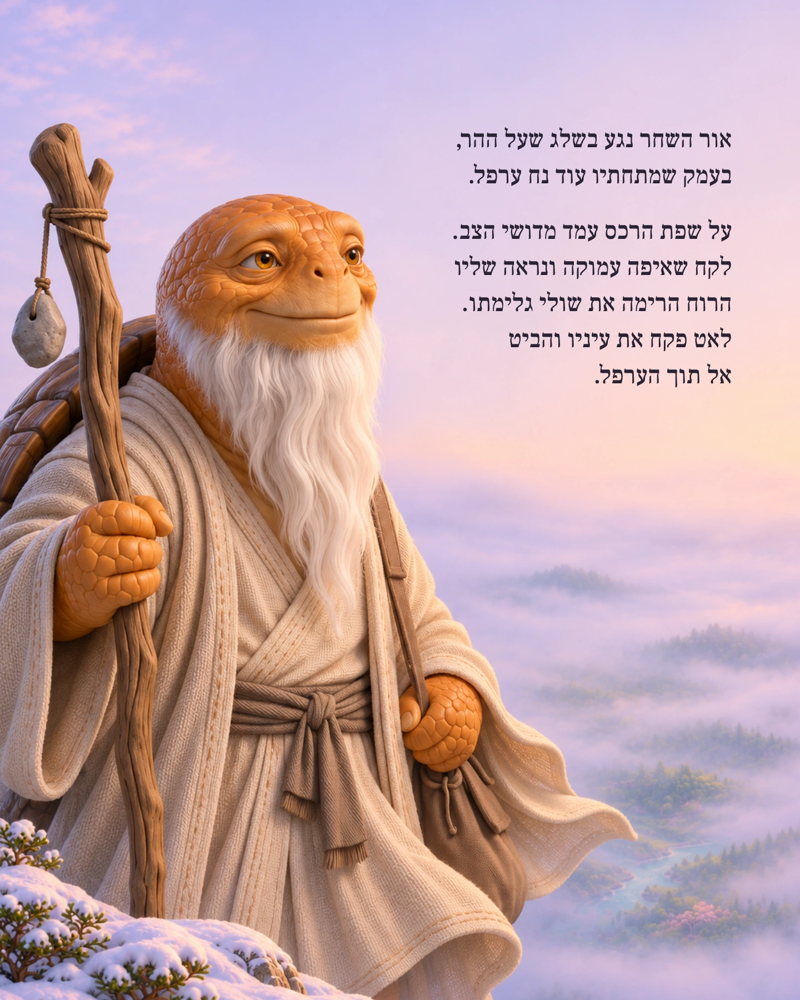
אור השחר נגע בשלג שעל ההר, בעמק שמתחתיו עוד נח ערפל.
על שפת הרכס עמד מדושי הצב. לקח שאיפה עמוקה ונראה שליו הרוח הרימה את שולי גלימתו. לאט פקח את עיניו והביט אל תוך הערפל.
עמוד 3 — הגיע הזמן
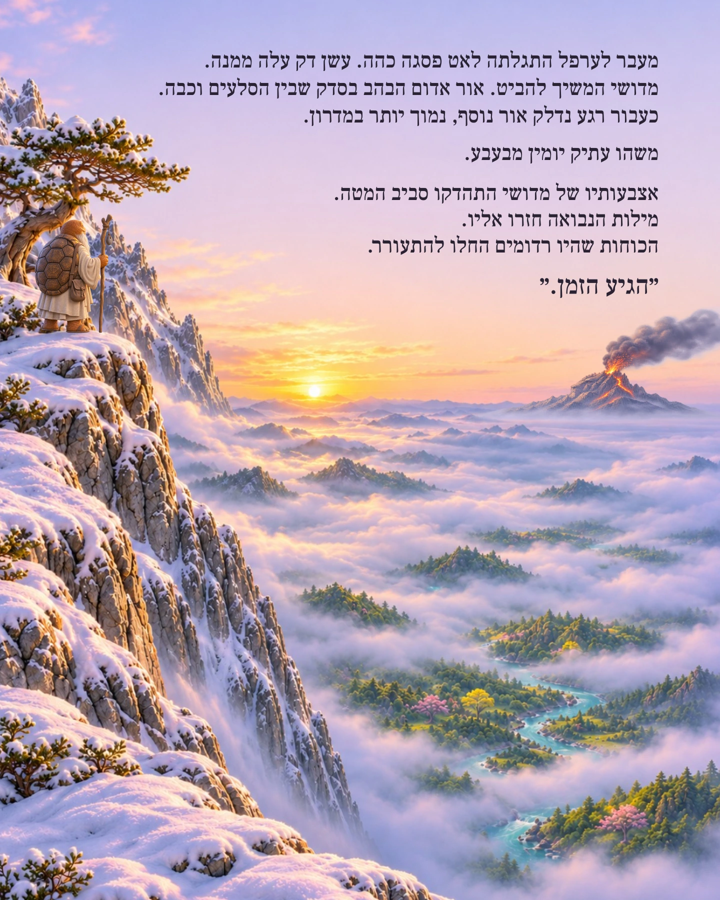
מעבר לערפל התגלתה לאט פסגה כהה. עשן דק עלה ממנה. מדושי המשיך להביט. אור אדום הבהב בסדק שבין הסלעים וכבה. כעבור רגע נדלק אור נוסף, נמוך יותר במדרון.
משהו עתיק יומין מבעבע.
אצבעותיו של מדושי התהדקו סביב המטה. מילות הנבואה חזרו אליו. הכוחות שהיו רדומים החלו להתעורר.
״הגיע הזמן.״
עמוד 4 — ראיקה בדוג׳ו

זמן מה קודם לכן, בכפר סאקורה, ראיקה כבר עמדה מול שק האגרוף, כמו בכל בוקר. היא זינקה, הסתובבה באוויר והטיחה את העקב בשק.
פאוו!
החבטה הדהדה באולם, והשק התנדנד לאחור. עד שחזר אליה, היא כבר הייתה מוכנה לבעיטה הבאה.
ראית, אבא? חשבה ראיקה והציצה אל סנסיי ראי. מבטו נעצר על היד שהורידה לרגע כשנחתה.
״לוחם צריך להיות חזק וגם חכם,״ אמר.
עמוד 6 — החרב והבמבוק
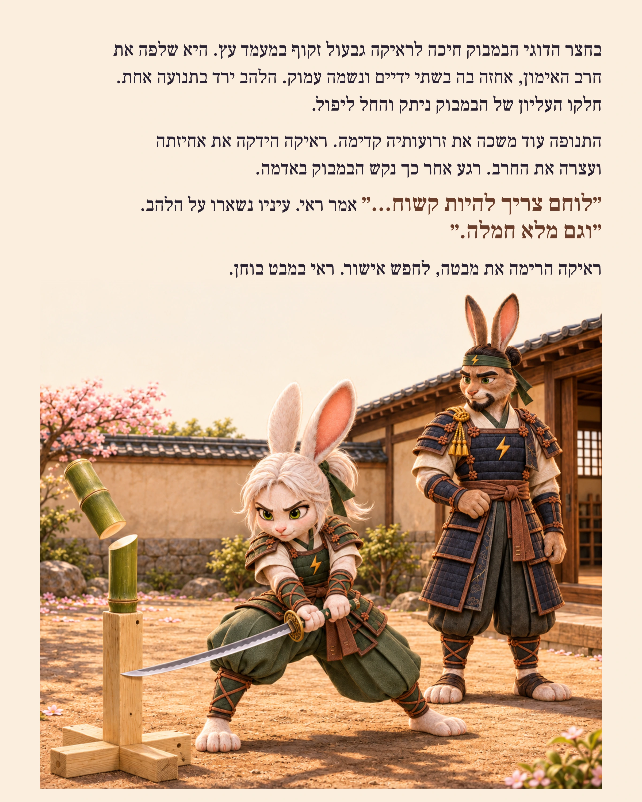
בחצר הדוגי הבמבוק חיכה לראיקה גבעול זקוף במעמד עץ. היא שלפה את חרב האימון, אחזה בה בשתי ידיים ונשמה עמוק. הלהב ירד בתנועה אחת. חלקו העליון של הבמבוק ניתק והחל ליפול.
התנופה עוד משכה את זרועותיה קדימה. ראיקה הידקה את אחיזתה ועצרה את החרב. רגע אחר כך נקש הבמבוק באדמה.
״לוחם צריך להיות קשוח...״ אמר ראי. עיניו נשארו על הלהב. ״וגם מלא חמלה.״
ראיקה הרימה את מבטה, לחפש אישור. ראי במבט בוחן.
עמוד 7 — שיחת התה
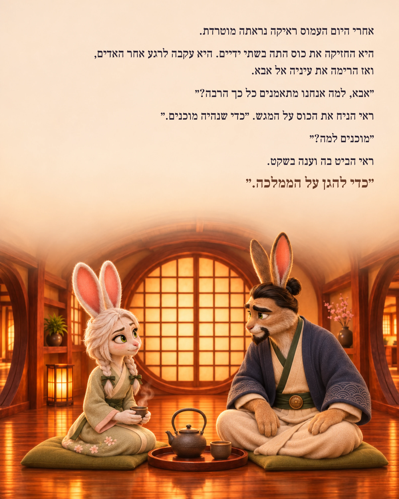
אחרי היום העמוס ראיקה נראתה מוטרדת.
היא החזיקה את כוס התה בשתי ידיים. היא עקבה לרגע אחר האדים, ואז הרימה את עיניה אל אבא.
״אבא, למה אנחנו מתאמנים כל כך הרבה?״
ראי הניח את הכוס על המגש. ״כדי שנהיה מוכנים.״
״מוכנים למה?״
ראי הביט בה וענה בשקט.
״כדי להגן על הממלכה.״
עמוד 8 — ואם אפחד?
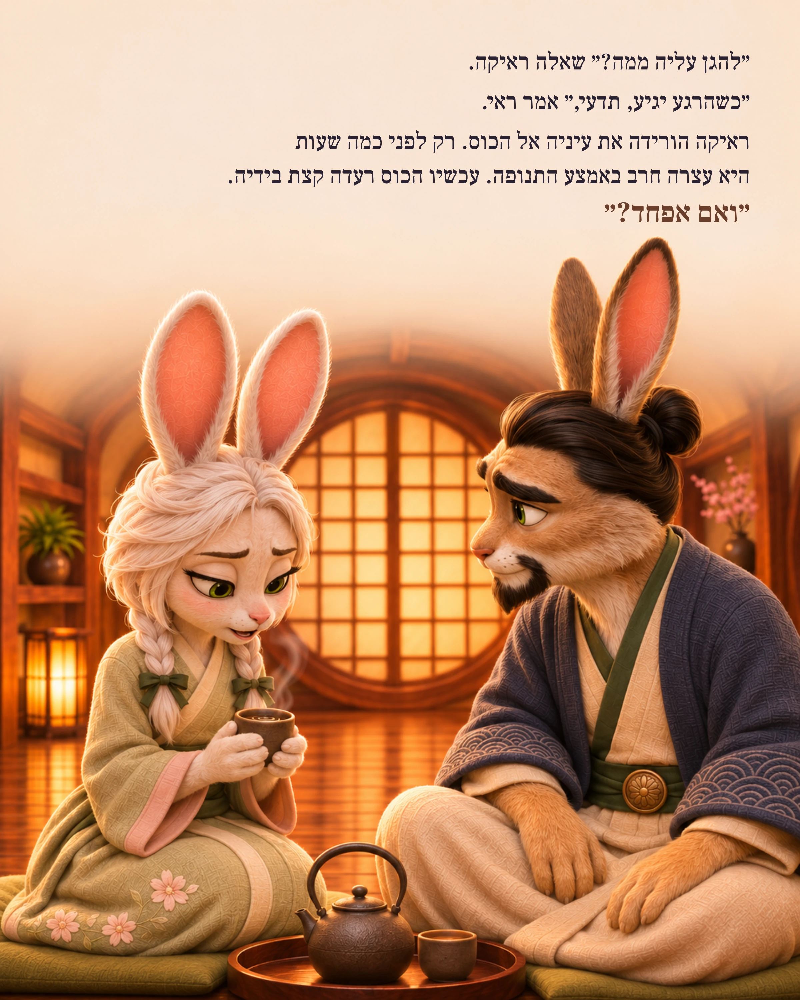
״להגן עליה ממה?״ שאלה ראיקה.
״כשהרגע יגיע, תדעי,״ אמר ראי.
ראיקה הורידה את עיניה אל הכוס. רק לפני כמה שעות היא עצרה חרב באמצע התנופה. עכשיו הכוס רעדה קצת בידיה.
״ואם אפחד?״
עמוד 9 — למרות הפחד
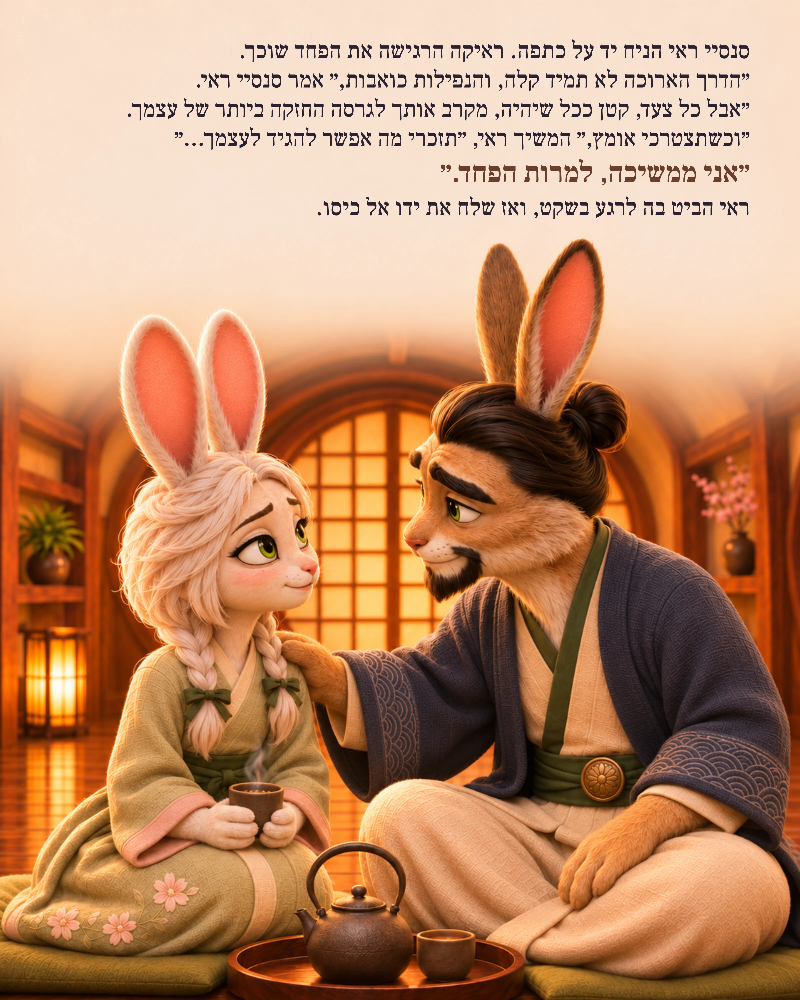
סנסיי ראי הניח יד על כתפה. ראיקה הרגישה את הפחד שוכך.
״הדרך הארוכה לא תמיד קלה, והנפילות כואבות,״ אמר סנסיי ראי.
״אבל כל צעד, קטן ככל שיהיה, מקרב אותך לגרסה החזקה ביותר של עצמך.
״וכשתצטרכי אומץ,״ המשיך ראי, ״תזכרי מה אפשר להגיד לעצמך...״
״אני ממשיכה, למרות הפחד.״
ראי הביט בה לרגע בשקט, ואז שלח את ידו אל כיסו.
עמוד 10 — הנפילה
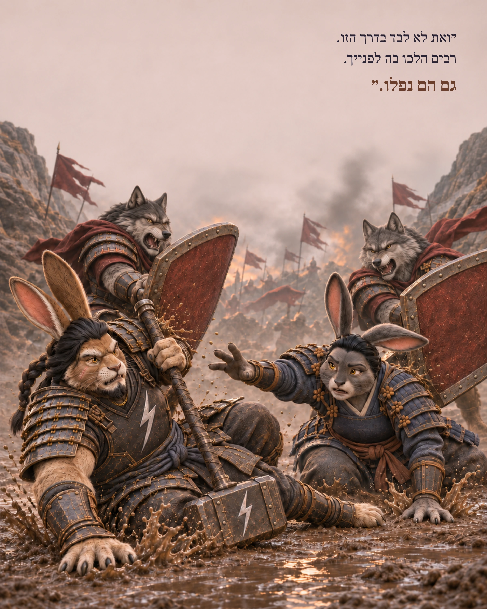
״ואת לא לבד בדרך הזו.
רבים הלכו בה לפנייך.
גם הם נפלו.״
עמוד 11 — הקימה
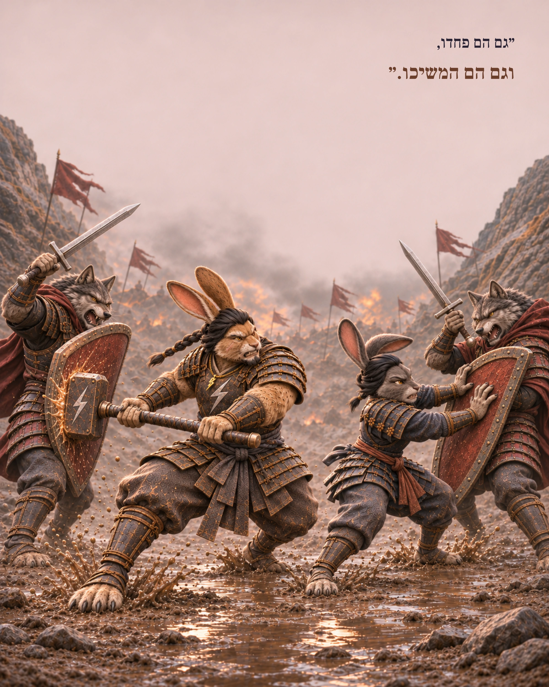
״גם הם פחדו,
וגם הם המשיכו.״
עמוד 12 — תליון הברק
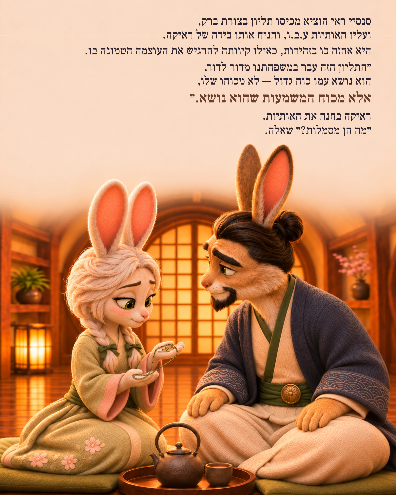
קריאת הטקסט
סנסיי ראי הוציא מכיסו תליון בצורת ברק, ועליו האותיות ע.ב.ו, והניח אותו בידה של ראיקה.
היא אחזה בו בזהירות, כאילו קיוותה להרגיש את העוצמה הטמונה בו.
״התליון הזה עבר במשפחתנו מדור לדור. הוא נושא עמו כוח גדול — לא מכוחו שלו, אלא מכוח המשמעות שהוא נושא.״
ראיקה בחנה את האותיות.
״מה הן מסמלות?״ שאלה.
עמוד 13 — המורשת שלנו
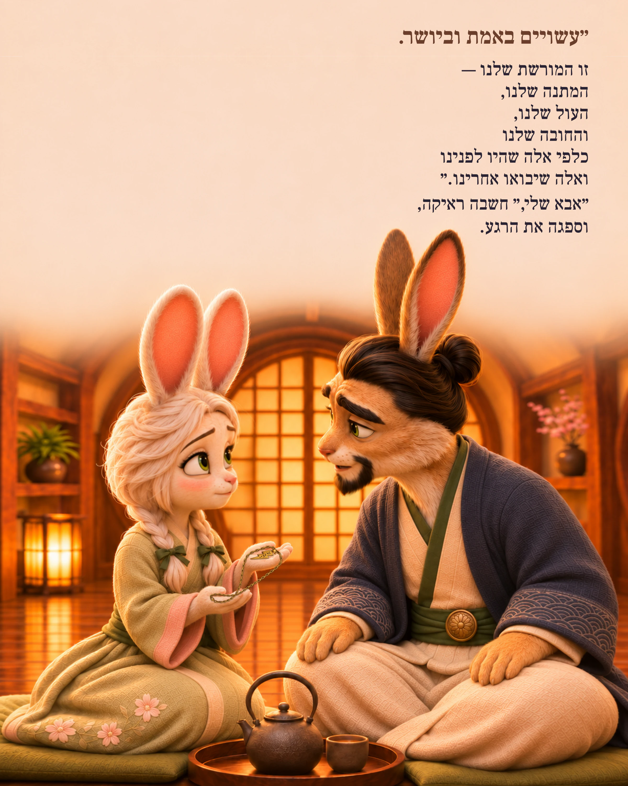
קריאת הטקסט
״עשויים באמת וביושר.
זו המורשת שלנו —
המתנה שלנו,
העול שלנו,
והחובה שלנו
כלפי אלה שהיו לפנינו
ואלה שיבואו אחרינו.״
״אבא שלי,״ חשבה ראיקה,
וספגה את הרגע.
גב הכריכה

בין ההרים שבצפון שוכן כפר סאקורה השקט. שם, בין עצי הדובדבן, גדלה לה ראיקה, ארנבת צעירה שצועדת בדרכי אבות אבותיה ומקדישה את חייה להיות הלוחמת הכי חזקה שתוכל.
יום אחרי יום מחכים לה אימונים קשים. היא מתרגלת אמנויות לחימה, לומדת לשלוט בכלי נשק ומחזקת את גופה. אפילו לשבת בשקט ולהתרכז בנשימה זה חלק מהאימון. אביה מכין אותה לכל אתגר שיעמוד בפניה.
ראיקה עוד מנסה להבין למה דורשים ממנה כל כך הרבה ומה מקומה בכל זה. ויש רגעים שבהם היא רק רוצה להיות ילדה.
הצטרפו למסע של ראיקה וגלו מה צריך כדי להיות לוחמת.
מהי מורשת ריישן?
כל עמוד נוסף יופיע כאן רק אחרי אישור מפורש. לא יוחלפו תמונות מאושרות ולא ייווצרו גרסאות חדשות ללא בקשה.